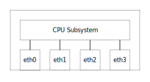

Front Ports
Front ports are represented as standard Ethernet interfaces within the Linux kernel.
After a reboot, all interfaces are considered as host interfaces with no bridging involved.
Only the CPU Subsystem can send and receive frames through these interfaces:

Later it is shown how to configure front ports to be members of bridges or link aggregation groups.
Front ports are controlled by either iproute2 or ethtool.
iproute2 is a collection of commands such as ip, bridge or tc.
This section describes general operations on ports using these tools.
| The number of front ports depends on the actual switch product. |
1. Interface state
All interfaces are disabled by default and will need to be enabled before they can be used.
Enable an interface and check the status:
# ip link set dev eth0 up
# ip link show dev eth0
4: eth0: <BROADCAST,MULTICAST,UP,LOWER_UP> mtu 1500 qdisc mq state UP mode DEFAULT group default qlen 1000
link/ether 00:40:42:04:98:9b brd ff:ff:ff:ff:ff:ff
Disable an interface and check the status:
# ip link set dev eth0 down
# ip link show dev eth0
4: eth0: <BROADCAST,MULTICAST> mtu 1500 qdisc mq state DOWN mode DEFAULT group default qlen 1000
link/ether 00:40:42:04:98:9b brd ff:ff:ff:ff:ff:ff
2. IP address
It is possible to assign an IP address to an interface and use it as a standard network interface.
Assign an IP address and check the status:
# ip link set dev eth0 up
# ip addr add dev eth0 192.168.1.1
# ip addr show dev eth0
4: eth0: <BROADCAST,MULTICAST,UP,LOWER_UP> mtu 1500 qdisc mq state UP group default qlen 1000
link/ether 00:40:42:04:98:9b brd ff:ff:ff:ff:ff:ff
inet 192.168.1.1/32 scope global eth0
valid_lft forever preferred_lft forever
inet6 fe80::240:42ff:fe04:989b/64 scope link
valid_lft forever preferred_lft forever
It is now possible to ping hosts on the same subnet:
# ping 192.168.1.2 PING 192.168.1.2 (192.168.1.2) 56(84) bytes of data. 64 bytes from 192.168.1.2: icmp_seq=1 ttl=64 time=0.629 ms 64 bytes from 192.168.1.2: icmp_seq=2 ttl=64 time=0.334 ms 64 bytes from 192.168.1.2: icmp_seq=3 ttl=64 time=0.325 ms 64 bytes from 192.168.1.2: icmp_seq=4 ttl=64 time=0.337 ms ^C --- 192.168.1.2 ping statistics --- 4 packets transmitted, 4 received, 0% packet loss, time 3076ms rtt min/avg/max/mdev = 0.325/0.406/0.629/0.128 ms
Delete an IP address and check the status:
# ip addr del dev eth0 192.168.1.1/24
# ip addr show dev eth0
4: eth0: <BROADCAST,MULTICAST,UP,LOWER_UP> mtu 1500 qdisc mq state UP group default qlen 1000
link/ether 00:40:42:04:98:9b brd ff:ff:ff:ff:ff:ff
inet6 fe80::240:42ff:fe04:989b/64 scope link
valid_lft forever preferred_lft forever
| Do not assign IP addresses to interfaces that will be used in bridges or link aggregation groups. |
3. MTU
Change the Maximum Transmission Unit (MTU) on a port and check the status:
# ip link set dev eth0 mtu 1600
# ip link show dev eth0
4: eth0: <BROADCAST,MULTICAST,UP,LOWER_UP> mtu 1600 qdisc mq state UP mode DEFAULT group default qlen 1000
link/ether 00:40:42:04:98:9b brd ff:ff:ff:ff:ff:ff
4. MAC Address
Change the Ethernet MAC Address on a port and check the status:
# ip link set dev eth0 address 00:00:00:22:22:22
# ip link show dev eth0
4: eth0: <BROADCAST,MULTICAST,UP,LOWER_UP> mtu 1500 qdisc mq state UP mode DEFAULT group default qlen 1000
link/ether 00:00:00:22:22:22 brd ff:ff:ff:ff:ff:ff permaddr 00:40:42:04:98:9b
5. Speed and Duplex
Auto-negotiation of speed and duplex settings is enabled by default.
It is a requirement that the link partner also supports auto-negotiation.
If a port is connected to equipment that does not support auto-negotiation, auto-negotiation must be disabled and speed and duplex must be set manually.
Change the speed and duplex on a port and check the status:
# ethtool -s eth0 speed 100 duplex half autoneg off
# ethtool eth0
Settings for eth0:
Supported ports: [ TP MII ]
Supported link modes: 10baseT/Half 10baseT/Full
100baseT/Half 100baseT/Full
1000baseT/Half 1000baseT/Full
Supported pause frame use: Symmetric
Supports auto-negotiation: Yes
Supported FEC modes: Not reported
Advertised link modes: 100baseT/Half
Advertised pause frame use: No
Advertised auto-negotiation: No
Advertised FEC modes: Not reported
Speed: 100Mb/s
Duplex: Half
Port: MII
PHYAD: 0
Transceiver: internal
Auto-negotiation: off
Link detected: yes
6. Flow Control
Flow Control is a mechanism to temporarily stop transmission of traffic and works by letting the receiver send a pause control frame back to the transmitter when a certain buffer threshold has been reached.
Flow Control was defined by the IEEE 802.3x standard and is disabled by default.
Send pause control frames when reaching buffer threshold:
# ethtool -A eth0 tx on
Do not send pause control frames when reaching buffer threshold:
# ethtool -A eth0 tx off
Obey received pause control frames:
# ethtool -A eth0 rx on
Ignore received pause control frames:
# ethtool -A eth0 rx off
Show flow control configuration:
# ethtool -a eth0 Pause parameters for eth0: Autonegotiate: off RX: off TX: off
| Autonegotiation of flow control is not supported. |
| Flow Control and Priority Flow Control must not be enabled simultaneously. |
7. Priority Flow Control
On a per-port basis, the Priority Flow Control as defined in 802.1Qbb can be configured.
This requires that Port Flow Control (802.3x) is not enabled on the same port.
By default, Priority Flow Control is disabled.
First mapping of frames into priority must be configured.
The following will enable frames to be mapped to priority based on the PCP value in the tag:
qos i_tag_map eth0 --prio 0123456701234567 --dpl 0000000011111111 qos i_mode eth0 --tag 1 --dscp 0
The device (port) is eth0.
Secondly, the LLDP protocol must be enabled:
lldpad -d -f /tmp/lldpad.conf & lldptool set-lldp -i eth0 adminStatus=rxtx
The device (port) is eth0.
The lldpad is started in background.
This command will enable PFC in selected priorities.
lldptool -T -i eth0 -V PFC enabled=1,5,7
The device (port) is eth0.
The PFC enabled priorities are 1,5,7
8. Show Configuration and Status
Show the basic configuration and status for a port with ip link:
# ip link show dev eth0
4: eth0: <BROADCAST,MULTICAST,UP,LOWER_UP> mtu 1500 qdisc mq master br0 state UP mode DEFAULT group default qlen 1000
link/ether 00:00:00:01:00:00 brd ff:ff:ff:ff:ff:ff permaddr 00:40:42:04:98:e1
Show detailed configuration and status for a port with ip -d link:
# ip -d link show dev eth0
4: eth0: <BROADCAST,MULTICAST,UP,LOWER_UP> mtu 1500 qdisc mq master br0 state UP mode DEFAULT group default qlen 1000
link/ether 00:00:00:01:00:00 brd ff:ff:ff:ff:ff:ff permaddr 00:40:42:04:98:e1 promiscuity 1 minmtu 68 maxmtu 65535
bridge_slave state forwarding priority 32 cost 4 hairpin off guard off root_block off fastleave off learning on flood on port_id 0x8001 port_no 0x1 designated_port 32769 designated_cost 0 designated_bridge 8000.0:0:0:1:0:0 designated_root 8000.0:0:0:1:0:0 hold_timer 0.00 message_age_timer 0.00 forward_delay_timer 0.00 topology_change_ack 0 config_pending 0 proxy_arp off proxy_arp_wifi off mcast_router 1 mcast_fast_leave off mcast_flood on mcast_to_unicast off neigh_suppress off group_fwd_mask 0 group_fwd_mask_str 0x0 vlan_tunnel off isolated off addrgenmode eui64 numtxqueues 8 numrxqueues 1 gso_max_size 65536 gso_max_segs 65535 portname p0 switchid 0040420498e0
Show standard information for a port with ethtool:
# ethtool eth0
Settings for eth0:
Supported ports: [ TP MII ]
Supported link modes: 10baseT/Half 10baseT/Full
100baseT/Half 100baseT/Full
1000baseT/Half 1000baseT/Full
Supported pause frame use: Symmetric
Supports auto-negotiation: Yes
Supported FEC modes: Not reported
Advertised link modes: 10baseT/Half 10baseT/Full
100baseT/Half 100baseT/Full
1000baseT/Half 1000baseT/Full
Advertised pause frame use: No
Advertised auto-negotiation: Yes
Advertised FEC modes: Not reported
Link partner advertised link modes: 10baseT/Half 10baseT/Full
100baseT/Half 100baseT/Full
1000baseT/Full
Link partner advertised pause frame use: Symmetric Receive-only
Link partner advertised auto-negotiation: Yes
Link partner advertised FEC modes: Not reported
Speed: 1000Mb/s
Duplex: Full
Port: MII
PHYAD: 0
Transceiver: internal
Auto-negotiation: on
Link detected: yes
9. Show Statistics
Show statistics for a port with ip link:
# ip -s link show dev eth0
4: eth0: <BROADCAST,MULTICAST,UP,LOWER_UP> mtu 1500 qdisc mq master br0 state UP mode DEFAULT group default qlen 1000
link/ether 00:00:00:01:00:00 brd ff:ff:ff:ff:ff:ff permaddr 00:40:42:04:98:e1
RX: bytes packets errors dropped missed mcast
0 0 0 0 0 0
TX: bytes packets errors dropped carrier collsns
2558 29 0 0 0 0
Show standard group statistics for a port with ethtool:
# ethtool -S eth0 --all-groups Standard stats for eth0: eth-mac-FramesTransmittedOK: 114 eth-mac-SingleCollisionFrames: 0 eth-mac-MultipleCollisionFrames: 0 eth-mac-FramesReceivedOK: 160 eth-mac-FrameCheckSequenceErrors: 0 eth-mac-AlignmentErrors: 0 eth-mac-OctetsTransmittedOK: 11368 eth-mac-FramesWithDeferredXmissions: 0 eth-mac-LateCollisions: 0 eth-mac-FramesAbortedDueToXSColls: 0 eth-mac-FramesLostDueToIntMACXmitError: 0 eth-mac-CarrierSenseErrors: 0 eth-mac-OctetsReceivedOK: 14941 eth-mac-FramesLostDueToIntMACRcvError: 0 eth-mac-MulticastFramesXmittedOK: 10 eth-mac-BroadcastFramesXmittedOK: 1 eth-mac-FramesWithExcessiveDeferral: 0 eth-mac-MulticastFramesReceivedOK: 54 eth-mac-BroadcastFramesReceivedOK: 2 eth-mac-InRangeLengthErrors: 0 eth-mac-OutOfRangeLengthField: 0 eth-mac-FrameTooLongErrors: 0 rmon-etherStatsUndersizePkts: 0 rmon-etherStatsOversizePkts: 0 rmon-etherStatsFragments: 0 rmon-etherStatsJabbers: 0 rx-rmon-etherStatsPkts64Octets: 49 rx-rmon-etherStatsPkts65to127Octets: 106 rx-rmon-etherStatsPkts128to255Octets: 5 rx-rmon-etherStatsPkts256to511Octets: 0 rx-rmon-etherStatsPkts512to1023Octets: 0 rx-rmon-etherStatsPkts1024to1518Octets: 0 rx-rmon-etherStatsPkts1519to10239Octets: 0 tx-rmon-etherStatsPkts64Octets: 2 tx-rmon-etherStatsPkts65to127Octets: 112 tx-rmon-etherStatsPkts128to255Octets: 0 tx-rmon-etherStatsPkts256to511Octets: 0 tx-rmon-etherStatsPkts512to1023Octets: 0 tx-rmon-etherStatsPkts1024to1518Octets: 0 tx-rmon-etherStatsPkts1519to10239Octets: 0
This output consists of the 4 groups eth-phy, eth-mac, eth-ctrl and rmon.
It is also possible to get these individually with the --groups option.
Besides these statistics you can get port specific statistics counters, which will differ between switches. On a LAN966x you will get this output:
# ethtool -S eth0 NIC statistics: rx_octets: 0 rx_unicast: 0 rx_multicast: 0 rx_broadcast: 0 rx_short: 0 rx_frag: 0 rx_jabber: 0 rx_crc: 0 rx_symbol_err: 0 rx_sz_64: 0 rx_sz_65_127: 0 rx_sz_128_255: 0 rx_sz_256_511: 0 rx_sz_512_1023: 0 rx_sz_1024_1526: 0 rx_sz_jumbo: 0 rx_pause: 0 rx_control: 0 rx_long: 0 rx_cat_drop: 0 rx_red_prio_0: 0 rx_red_prio_1: 0 rx_red_prio_2: 0 rx_red_prio_3: 0 rx_red_prio_4: 0 rx_red_prio_5: 0 rx_red_prio_6: 0 rx_red_prio_7: 0 rx_yellow_prio_0: 0 rx_yellow_prio_1: 0 rx_yellow_prio_2: 0 rx_yellow_prio_3: 0 rx_yellow_prio_4: 0 rx_yellow_prio_5: 0 rx_yellow_prio_6: 0 rx_yellow_prio_7: 0 rx_green_prio_0: 0 rx_green_prio_1: 0 rx_green_prio_2: 0 rx_green_prio_3: 0 rx_green_prio_4: 0 rx_green_prio_5: 0 rx_green_prio_6: 0 rx_green_prio_7: 0 rx_assembly_err: 0 rx_smd_err: 0 rx_assembly_ok: 0 rx_merge_frag: 0 rx_pmac_octets: 0 rx_pmac_unicast: 0 rx_pmac_multicast: 0 rx_pmac_broadcast: 0 rx_pmac_short: 0 rx_pmac_frag: 0 rx_pmac_jabber: 0 rx_pmac_crc: 0 rx_pmac_symbol_err: 0 rx_pmac_sz_64: 0 rx_pmac_sz_65_127: 0 rx_pmac_sz_128_255: 0 rx_pmac_sz_256_511: 0 rx_pmac_sz_512_1023: 0 rx_pmac_sz_1024_1526: 0 rx_pmac_sz_jumbo: 0 rx_pmac_pause: 0 rx_pmac_control: 0 rx_pmac_long: 0 tx_octets: 2558 tx_unicast: 2 tx_multicast: 27 tx_broadcast: 0 tx_col: 0 tx_drop: 0 tx_pause: 0 tx_sz_64: 0 tx_sz_65_127: 27 tx_sz_128_255: 2 tx_sz_256_511: 0 tx_sz_512_1023: 0 tx_sz_1024_1526: 0 tx_sz_jumbo: 0 tx_yellow_prio_0: 0 tx_yellow_prio_1: 0 tx_yellow_prio_2: 0 tx_yellow_prio_3: 0 tx_yellow_prio_4: 0 tx_yellow_prio_5: 0 tx_yellow_prio_6: 0 tx_yellow_prio_7: 0 tx_green_prio_0: 22 tx_green_prio_1: 0 tx_green_prio_2: 0 tx_green_prio_3: 0 tx_green_prio_4: 0 tx_green_prio_5: 0 tx_green_prio_6: 0 tx_green_prio_7: 7 tx_aged: 0 tx_llct: 0 tx_ct: 0 tx_mm_hold: 0 tx_merge_frag: 0 tx_pmac_octets: 0 tx_pmac_unicast: 0 tx_pmac_multicast: 0 tx_pmac_broadcast: 0 tx_pmac_pause: 0 tx_pmac_sz_64: 0 tx_pmac_sz_65_127: 0 tx_pmac_sz_128_255: 0 tx_pmac_sz_256_511: 0 tx_pmac_sz_512_1023: 0 tx_pmac_sz_1024_1526: 0 tx_pmac_sz_jumbo: dr_local: 0 dr_tail: 0 dr_yellow_prio_0: 0 dr_yellow_prio_1: 0 dr_yellow_prio_2: 0 dr_yellow_prio_3: 0 dr_yellow_prio_4: 0 dr_yellow_prio_5: 0 dr_yellow_prio_6: 0 dr_yellow_prio_7: 0 dr_green_prio_0: 0 dr_green_prio_1: 0 dr_green_prio_2: 0 dr_green_prio_3: 0 dr_green_prio_4: 0 dr_green_prio_5: 0 dr_green_prio_6: 0 dr_green_prio_7: 0
The output for a port on Sparx5 will be slightly different as it has a different set of counters.